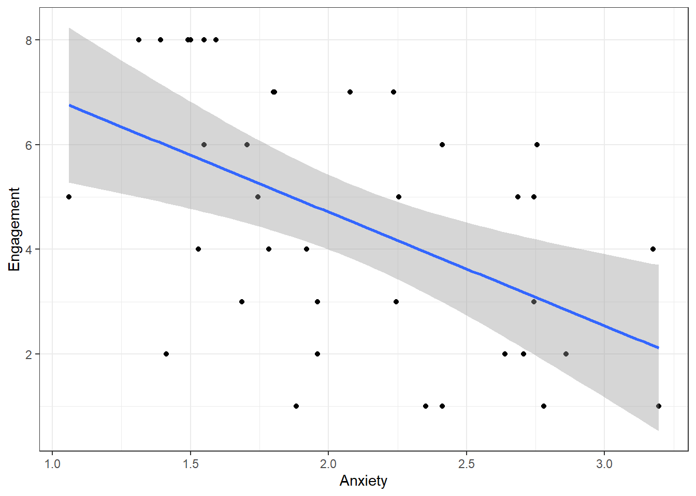

Lab activity 2 - Statistics anxiety and engagement in module activities
Question 1a If our hypothesis is correct, what type of correlation (if any) should we observe between students’ mean anxiety levels and the variable n_weeks? A negative correlation
── Conflicts ────────────────────────────────────────── tidyverse_conflicts() ──
✖ dplyr::filter() masks stats::filter()
✖ dplyr::lag() masks stats::lag()
✖ dplyr::recode() masks car::recode()
✖ purrr::some() masks car::some()
ℹ Use the conflicted package (<http://conflicted.r-lib.org/>) to force all conflicts to become errors
Step 2. Read in the data
stars <-read_csv("stars2.csv")
Rows: 1887 Columns: 3
── Column specification ────────────────────────────────────────────────────────
Delimiter: ","
chr (1): Question
dbl (2): ID, Score
ℹ Use `spec()` to retrieve the full column specification for this data.
ℹ Specify the column types or set `show_col_types = FALSE` to quiet this message.
engage <-read_csv("psess.csv")
Rows: 100 Columns: 2
── Column specification ────────────────────────────────────────────────────────
Delimiter: ","
dbl (2): ID, n_weeks
ℹ Use `spec()` to retrieve the full column specification for this data.
ℹ Specify the column types or set `show_col_types = FALSE` to quiet this message.
Question 2a In the stars data frame, what do the numbers in the first row across the three columns refer to? ID = 3, Question = Q01 and Score = 1 shows us that participant 3 reported a score of 1 on question 1.
Question 4a What are the means and standard deviation for anxiety and engagement with the statistics module? Anxiety M = 2.08, SD = 0.56; Engagement M = 4.54, SD = 2.42.
Step 5: Visualise the data
ggplot(joined, aes(x = mean_anxiety, y = n_weeks)) +geom_point() +geom_smooth(method ="lm") +labs(x ="Anxiety", y ="Engagement") +theme_bw()
`geom_smooth()` using formula = 'y ~ x'

Question 5a What does the scatterplot suggest about the relationship between anxiety and engagement? That there might indeed be a relatively strong negative correlation between the two; students with more anxiety, engage less.
Step 6: Build the regression model ———————————-
mod <-lm(n_weeks ~ mean_anxiety, data = joined)mod_summary <-summary(mod)mod_summary
Call:
lm(formula = n_weeks ~ mean_anxiety, data = joined)
Residuals:
Min 1Q Median 3Q Max
-3.990 -1.734 -0.093 1.907 2.929
Coefficients:
Estimate Std. Error t value Pr(>|t|)
(Intercept) 9.0572 1.3500 6.709 9.1e-08 ***
mean_anxiety -2.1727 0.6274 -3.463 0.00143 **
---
Signif. codes: 0 '***' 0.001 '**' 0.01 '*' 0.05 '.' 0.1 ' ' 1
Residual standard error: 2.12 on 35 degrees of freedom
Multiple R-squared: 0.2552, Adjusted R-squared: 0.2339
F-statistic: 11.99 on 1 and 35 DF, p-value: 0.001428
Question 6a What is the estimate of the y-intercept for the model, rounded to three decimal places? 9.057. Explanation: In the summary table, this is the estimate of the intercept.
Question 6b To three decimal places, if the General Linear Model for this model is Y=beta0 + beta1X + e, then the value of beta1 is … -2.173. Explanation: In the summary table, this is the estimate of mean_anxiety, i.e., the slope.
Question 6c To three decimal places, for each unit increase in anxiety, engagement decreases by … 2.173. Explanation: In the summary table, this is also the estimate of mean_anxiety, the slope is how much it decreases so you just remove the - sign.
Question 6d To two decimal places, what is the overall F-value of the model? 11.99. Explanation: In the summary table, the F-ratio is noted as the F-statistic.
Question 6e Is the overall model significant? Yes. Explanation: The overall model p-value is .001428 which is less than .05, therefore significant.
Question 6f What proportion of the variance does the model explain? 25.52%. Explanation: The variance explained is determined by R-squared, you simply multiple it by 100 to get the percent.
Step 7: Checking assumptions
crPlots(mod) # Plot linear line and line that best fits the data to check the relationship between outcome and predictor is linear
qqPlot(mod$residuals) # Create qq-plot to check residuals are normally distributed
[1] 13 11
residualPlot(mod) # Create residual plot to check residual show homoscedasticity
Question 7a Does the relationship appear to be linear? Yes, the pink line roughly falls across the dashed blue line and looks mostly linear.
Question 7b Do the residuals show normality? Yes, in the qq-plot the open circles mostly assemble around the solid blue line, and fall mostly within the range of the dashed blue lines.
Question 7c Do the residuals show homoscedasticity? Yes, the residual plot shows that the spread of the residuals is roughly similar for different fitted values.
Step 8: Write up
A simple linear regression was performed with engagement (M = 4.54, SD = 0.56) as the outcome variable and statistics anxiety (M = 2.08, SD = 0.56) as the predictor variable. The results of the regression indicated that the model significantly predicted course engagement (F(1, 35) = 11.99, p < .001, R^2 = 0.25), accounting for 25% of the variance. Anxiety was a significant negative predictor (beta = -2.17, p < 0.001): as anxiety increased, course engagement decreased.